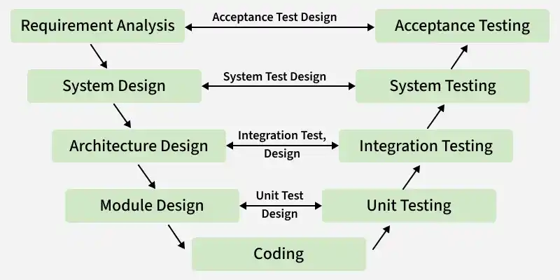

Andreas Hussain Sarantaris · 24-11-2026
Frederikssund Gymnasium · Programmering B
shortest-path-exercise repositoriet for at lave vores biblioteksmodul.projekt02.md på Lectio der indeholder opgavebeskrivelsen.projekt02.md på Lectio der indeholder opgavebeskrivelsen.projekt02.md i repositoriet (eller i filen projekt02.pdf på opgaven i Lectio).F12 eller højreklik og vælg "Undersøg"/"Inspect".console.log(...), hvor 
| Punkt * | Start + varighed | Aktivitet | Indhold |
|---|---|---|---|
| 1U | 12:05 + 15 | Overblik over forløbet og sidste lektion | Hvad har vi været igennem sidste lektion og generelt i dette forløb? |
| 1Ø | 12:20 + 10 | Lektier til i dag | Spørgsmål til lektierne og status på hvor langt I er nået. |
| 2U | 12:30 + 40 | Introduktion til Afleveringsprojekt 2 | Jeg sætter jer igang med projektet og gennemgår opgavebeskrivelsen. |
| 2Ø | 13:10 + 30 | I går igang med Afleveringsprojekt 2 | I får noget tid til at komme igang med projektet. |
| P | 13:40 + 10 | Pause | Pause inden næste modul. |
| 3U | 13:50 + 20 | Test-Driven Development (TDD) | Introduktion til TDD og enhedstests og integrationstests. |
| 3Ø | 14:10 + 65 | Skriv enhedstests til datastrukturerne | Gå igang med at lave tests til jeres nye datastrukturer. |
| 4U | 15:15 + 5 | Opsamling, lektier og næste lektion | Hjemmearbejde til næste gang og emnerne for næste lektion. |
| 4Ø | 15:20 + 5 | Afrunding | Færdiggør jeres arbejde og reflektér over jeres læring. |